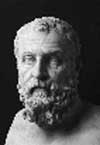

Antik Yunan’ın efsanevi yedi bilgesinden biri olan Solon (MÖ 658-558) bir devlet adamı ve komutandır. Atina devlet sisteminde yaptığı reformlar dünyanın ilk demokrasisinin ortaya çıkmasını mümkün kılmıştır.

Aristokrat bir ailede doğdu. İlk olarak rakip şehir devleti Megara’ya karşı Salamis Adası’nın kontrolü için yürüttüğü başarılı mücadelenin sonucunda bir komutan olarak ünlendi. Solon daha sonra Antik tarihçi Plutarch’ın (46-120) verdiği bilgiye göre MÖ 594 tarihinde “kanun yapıcı” seçildi.
Solon göreve geldiğinde, şehrin adalet sistemi büyük ölçüde bir önceki kanun yapıcı olan Draco’nun etkisindeydi. Draco’nun kanunları katılıkları ile tanınıyordu. Öyle ki bu yasalarda aylaklık ya da bahçeden meyve çalmak gibi küçük suçlar için bile idam cezası öngörülüyordu.
Solon yasaları gözden geçirip cezaları daha az haşin hale getirdi. Ayrıca şehrin yönetim sisteminde bir reform gerçekleştirdi. Onun çabaları sayesinde iktidar, asillerden halka doğru kaymaya başladı. “Eunomia”yı, yani iyi düzeni yeniden inşa etmek istiyordu. Böylece tüm Atinalılar yönetim sisteminde kendilerinin de bir rol sahibi olduğunu düşünecekti. Tüm vatandaşların dava açabilmelerini yasallaştırdı. Jürileri halka açık hale getirdi. Demokratik meclislerin atası olan “Dört Yüzler Konseyi” adında bir temsil organı oluşturdu.
İki yıllık görevinin ardından Atina’dan ayrıldı ve Akdeniz’de dolaşmaya başladı. (Böylece Atinalıların kanunlarını ilga etmesi için kendisine yaptığı baskıdan kurtulmuş olacaktı.) Aradan on yıl geçtikten sonra ömrünün son yıllarında Atina’ya döndüğünde yaptığı refomların önemli bir bölümünden vazgeçildiğini gördü ve hayal kırıklığına uğradı.
Solon’un reformları sadece birkaç yıl yürürlükte kalmış olsa da Yunan anayasal sisteminin oluşmasında ilk adımı teşkil etmiştir. Solon’un ölümünden yıllar sonra MÖ 507’de bir asilzade olan Cleisthenes Atina’da iktidarı ele geçirdiğinde Solon kanunlarına dayanan demokratik bir yapı oluşturdu. Bu dönemde şehrin kültürel, felsefi ve askeri yapısında daha önce görülmemiş bir gelişme yaşandı.
Ek Bilgiler
1- Antik tarihçi Diogen Laertius’a göre Solon kendisinden iki yüzyıl sonra yaşayacak olan Yunan filozofu Platon’un (MÖ 429-347) uzak bir akrabasıydı.
2- Solon aynı zamanda şairdi. Yasal reformlarını destekleyen şiirler yayınlamıştı. Bunlar Yunan edebiyatının en eski şiir örnekleri arasında yer almaktadır.
3- Hem Solon hem de selefi Draco İngilizce’ye çok sayıda kelime kazandırmışlardır. “Solon” bilge bir kanun yapıcı anlamına gelirken “draconian” sözcüğü ise sert cezaları betimlemek için kullanılmaktadır.